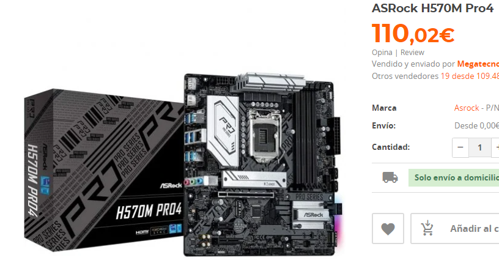
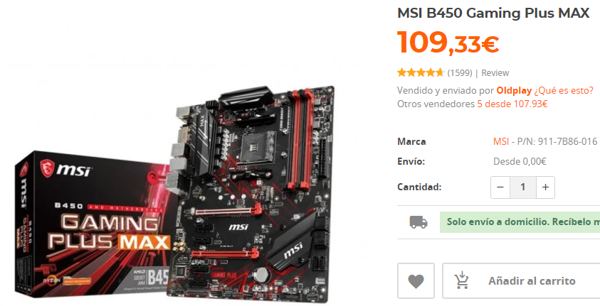
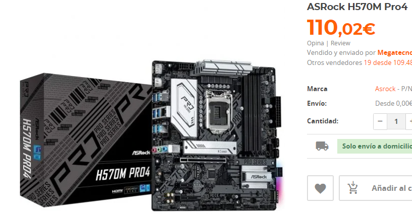
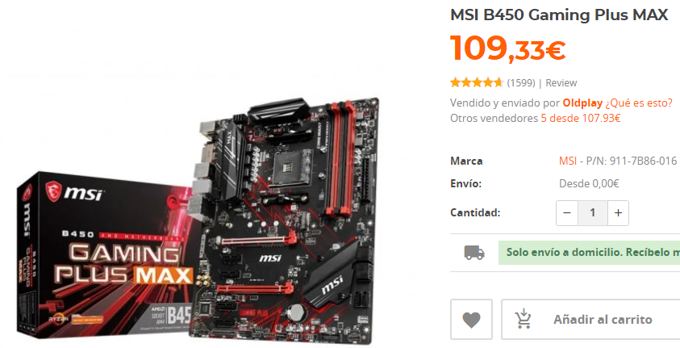

La placa base es usada para encajar todos los componentes de un equipo (Procesador, RAM,
Disco duro, Disipador, Tarjeta
gráfica...)
Tiene otra función muy importante, aquí se almacena la BIOS. Este es el menú de un ordenador donde hay
operaciones para
interactuar con el pc, pero es mejor no acceder a menos que seas un profesional, ya que puedes fastidiar el
pc. Desde la
BIOS se instala el sistema operativo, mediante un pendrive o CD booteable.
Hay varias gamas de este componente:
Las placas base que en su nombre lleven incorporada una A, significa que son de gama baja. Estas tienen
pocos módulos de
RAM, sobre la parte trasera, podemos decir que suelen tener conectores anticuados con VGA, VDI, PS2, etc. Las H también suelen
ser básicas, pero
un poco mejores que las tipo A. Sobre las tipo B ya son más avanzadas y tienen más módulos RAM,
mejores conectores, etc. Y las tipo Z son de alta gama.
Para finalizar, existen 2 formatos de placas:
Los ATX son placas base más grandes, en estas suelen
ser más completas por tener más tamaño. Y están fabricadas para
ordenadores con tamaño grande. En cambio los Micro ATX son para pcs de tamaño reducido.
 


